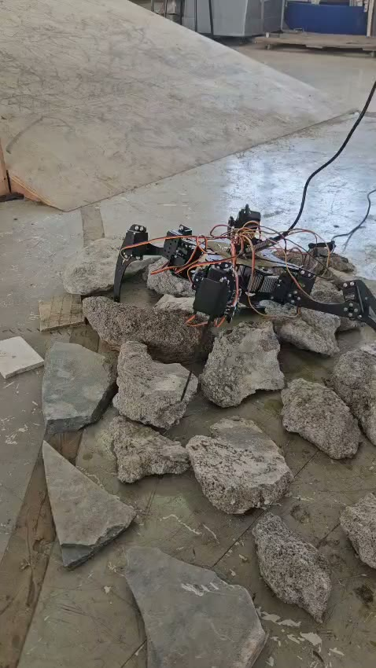

A six-legged robot that climbs over collapsed-building rubble and streams live thermal vision, gas readings and a LiDAR map to the team outside, so no rescuer has to crawl into an unstable void to find out who is still alive.
Every part has a job: legs to cross rubble, LiDAR to map the space, a thermal camera and a phone to find people.
Understanding the Hexapod
A six-legged search platform that walks into a collapsed structure, looks and listens for survivors, and reports to the team outside.
MobilitySix legs, tripod gait, three feet always down
BrainAn Android phone runs the search on its own
SensingThermal, LiDAR, camera, microphone, gas
AlertsPhoto, detection, battery and GPS to the team
Search pattern
Walk for 7.2 seconds, stand still and listen for 3, turn for 4.8. Repeat until something answers.
Mapping as it walks
LiDAR builds the floor plan while the camera and the microphone look and listen.
Real-time detection
A person counts only when the phone sees them in 5 of the last 8 camera frames. Then the robot stops and turns its torch on.
Body heat confirmed
The TC01A thermal camera confirms a warm body under the slabs. A person reads 31.5–39.5 °C; hotter objects are flagged as hot surfaces, not people.
Contact made
Standing still so its own servos stay quiet, it speaks to the survivor and listens for an answer.
Search logic
The phone runs the search on its own: patrol, investigate, engage, alert. No operator has to watch every second.
Confirm before alert
A person in 5 of 8 frames, or a voice or knock in 2 of 4 sound clips, counted only while standing still. One noisy frame never raises an alarm.
Integrated alerts
The alert reaches every phone on the team's alert channel at once: a photo, what it found, its battery and GPS. With no network, it is saved on the phone.
Drone, robot, team
Drones look from above. Hexapod checks the ground. The team goes in knowing where to look and what the air is like.
Survivor located
Sense first. Enter safer.
3D render · from the robot's MuJoCo model
One robot, many missions.

Collapsed buildings
In Virar in 2025, narrow lanes kept heavy machinery out of a 38-hour rescue. Hexapod walks into the gaps between slabs and checks for people first.
Smart India HackathonMuJoCoSpringer NatureMediaPipeIEEE XploreTensorFlow LiteElsevierAndroidIndian Express
Built by Team Scammers (Team ID 125847) for Smart India Hackathon 2026, PS SIH26218, Student Innovation: Robotics and Drones. Research, tools and reporting from the sources above.